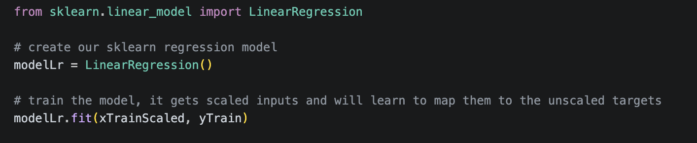
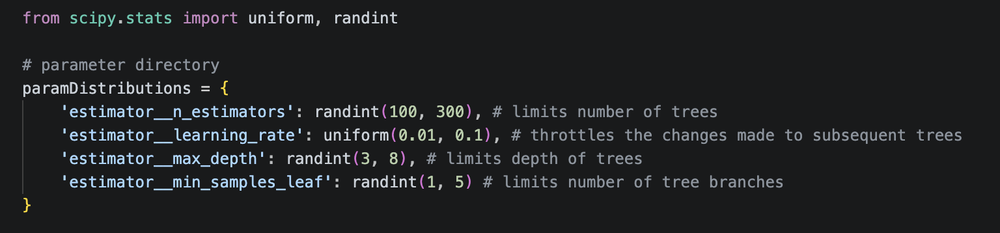

6.1 Building multivariate linear regression
This will be our simplest model to act as a baseline to compare all of our other models to.
We know that some of our parameters should exhibit a linear relationship with attitude,
specifically:
- CL (Lift Coeff.)
- Cm (Moment Coeff.)
These parameters should yield a very strong linear model. In future training sessions we
can compare the relative performance for our linear parameters. The remaining parameter are either
known to exhibit a different realtionship (e.g. parabolic etc.) or have an unknown relationship.
Overall a linear regression is a great first step towards determining how we will create the
model for out data. Linear regression is computationally efficient, quick, offers excellent
results for linear relationships, and very easy to code with libraries like Scikit-Learn.
6.1.1 Initlizing and traning the linear regression model
Creating and training a LR model using Scikit-Learn is very simple, we simply create the LR model
then train it on scaled data in two lines of code. We can then use the model with the validation
set to evaluate its Mean Absolute Error.

5.2 Building gradient boosted trees
Gradient boosted trees is an ensamble regression method that utilizes sequential decision tree creation along with gradient descent to minimize loss when adding new models. However in order to get a good model gradient boosted trees requires extensive hyperparameter tuning. This model is particularly useful for our data as it works very well with tabular data and is much simpler to run than a neural network.
5.2.1 Regularization
Regularization is the process of setting penalties within the loss function to prevent the model from completley overfitting the model.
We don't want overfitting because of the natural uncertainty and noise that comes with data collection. We want the model to learn the
generalizable patterns, not the the random fluctuations and noise.
Because gradient boosted trees utilizes decision trees, we can't use standard ridge or lasso regularization to prevent the model from overfitting. The weights applied simply do not work with this model, however we can use min_samples_leaf and max_depth to control the fitting.

5.2.2 Hyperparamter tuning with RandomizedSearchCV
Hyperparameters are the tuning values we have to set before the training even begins (e.g., the maximum depth of the trees,
or the learning rate). The problem is that we don't know the optimal settings for these hyperparameters to get a decent result
out of our regression, to solve this we use a "hyperparameter tuner". RandomizedSearchCV is a Scikit-Learn function that
does this for us, testing different hyperparameters to find out what specific combination works best for our usecase.
This tuner utilizes numerous different methods to make finding our optimal hyperparameters easy (including our regularization
parameters that we defined earlier). We also initilize our GradientBoostingRegressor() and wrap it in the MultiOutputRegressor()
so that we can get our mulitple parameters out of it. Once it runs we will have our tuned model that is ready to be evaluated.